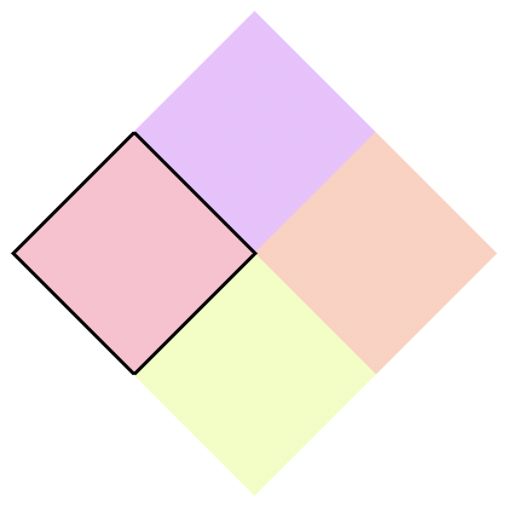

Simply put, quantum computing aims to create computers that harness quantum mechanical properties to perform calculations. This guide outlines the reason we are developing quantum computers, what advantages they give over classical computers, and what the future holds for quantum computing. You can read this guide from the start, or click the topic you're most curious about on the left.
As you've probably heard before, computers run on 0s and 1s. These 0s and 1s are called "bits", and are represented
by switches in your computer that can be on (1) or off (0). Using these switches, called transistors, we can
represent any type of data, from a simple number to an MP3 file.
Because the bits that we use have two possible states, the data that they encode is in a binary, or base-2 number
system. The numbers we use every day are in base-10, meaning each digit has 10 possible states (0-1-2-3-4-5-6-7-8-9). You may
have learned in elementary schools about the "ones" digit, the "tens" digit, and the "hundreds" digit. Each digit is
a different power of ten. In binary, each digit is a different power of two, so we have the ones digit, the twos
digit, the fours digit, the eights digit, and so on. For example, the base-10 number 23 would be written in binary as
10111, because 16+0+4+2+1 equals 23.
All of our data is represented using binary numbers, but some things take many more digits, and therefore many more
bits, than others. While the number 23 can be represented with just 5 bits, one second of high-quality MP3 audio is
40 kilobytes, which is 40,000 bytes, or 320,000 bits. A 200-gigabyte hard drive, which is the storage space of an
average laptop, contains 1.6 quintillion bits.
The "XOR" gate outputs 1 if one but not both of the inputs are one. This means that if A or B is one, that is if your input is 1 + 0 or 0 + 1, then the sum will be 1. If your input is 0 + 0 or 1 + 1, the sum will be 0. However, because of the AND gate, if your input is 1 + 1, the carry will be 1. In other words, 0+0=00, 1+0=01, 0+1=01, and 1+1=10.
The point is that bits can be manipulated to give the answer to a question. In our everyday computers, this is done with circuitry and electricity.
Many researchers are working on different ways to increase the power of our computers without needing any more bits. Here are a few approaches, and links to learn more about them:
Specialized chips
The computers we use are built around Central Processing Units, general-purpose logical units that perform all the
math and complicated operations inside the computer. Most computers also have a Graphical Processing Unit, which is
specialized for the rendering of graphical elements on your screen. Recently, there has been a push to develop more
specialized chips, since a general-purpose CPU is less efficient than chips designed for a specific task. This
movement has mainly been interested in specialized artificial intelligence chips, although it is not limited to this
application.
Learn more about specialized chips
Analog computing
Instead of using 0s and 1s, analog computing proposes a spectrum of values for each bit, meaning that you can have a
0, a 1, or any number in between. This allows for more complex data to be represented much more easily. Analog
computers are very efficient in simulating physical systems, but they are prone to inaccuracies. The appeal of a
binary system is that there is a fairly large tolerance for error, because the electric flow only has to be on or off.
It doesn't matter if it's not as strong as it should be. However, analog computers are based on having a full range
of values to work with, so even slight errors matter. For this reason, analog computers can only be used in
applications where there is an amount of tolerable inaccuracy.
Learn more about analog computing
Reversible computing
One fundamental concept of physics is that information cannot be destroyed, but can only change form. In other words,
there is a record of everything that has ever happened, if you have the tools to analyze the universe down to the
state of each atom. Because of this law, when information is deleted on your computer, it isn't actually destroyed;
instead it is converted into heat. This is why computers overheat. Essentially, reversible computing seeks to prevent
this heat loss and drastically improve the efficiency of computers, allowing us to do more calculations with less
energy. This is accomplished by using only reversible operations, meaning that no information is ever lost, since you
can undo everything you've done. While it is a challenge to write reversible programs, this approach is viable and is
being researched thoroughly.
Learn more about reversible computing
The final alternative approach is of course quantum computing, which will be the focus of the rest of this guide.
Quantum computing proposes a new definition of a bit based on quantum mechanics. This is the most revolutionary of the alternative computing methods, and perhaps the most promising. Quantum computers are made up of quantum bits, or qubits for short, rather than classical bits. These qubits have an important quality: superposition.
Superposition is at the heart of what makes quantum physics different from classical physics, and it is also what gives quantum computers their advantage. A quantum bit in superposition is a combination of 1 and 0; it is between the two states, but it can only be measured as either a 0 or a 1. One common analogy is to imagine a spinning coin. While it spins, it could be said to be between heads and tails, but when you "measure" it (that is, when it stops spinning), it can only be one of the two. This is a phenomenon that is completely unique to quantum physics, difficult to explain, and even harder to understand. Richard Feynman, a famous quantum physicist, is often credited as saying "If you think you understand quantum mechanics, you don't understand quantum mechanics."
However, that doesn't stop us from taking advantage of it. By applying operations (logic gates) to qubits in superposition, we are able to manipulate a superposition of many different inputs, giving many different answers.
This is Quantum Simon Says, a game that runs on a (simulated) quantum computer. You can learn more about how to play here. The game works with two qubits, and each square represents a state that the bits could be in (00, 01, 10, 11). In a classical computer, the bits would only be in one of these four states, so only one square would be highlighted. However, in a quantum computer, the bits could be in a combination of these states, meaning that multiple squares would be highlighted. The superposition could be equal, meaning that all the squares are highlighted the same, or some squares could be highlighted more heavily, meaning that there is a higher probability that the bits will be measured in that state.
If you've been paying very close attention, you might have noticed a disconnect between a superposition of a single qubit, and a superposition of multiple qubits. If you put two bits in superposition between 00 and 11, each bit has a 50% chance of being in 0 or 1. However, if one bit is 1, the other is guaranteed to also be 1, and if one is 0, so is the other. This is called entanglement, when the state of one particle, or bit, seems to depend on the state of another. In fact, this dependence continues even if the bits are thousands of miles apart. If you measure one as 1, the other will also collapse to 1, instantaneously. This property was described by Einstein as "spooky action at a distance," and it really turned him off from quantum mechanics, because it seemingly transferred information faster than the speed of light. However, this property cannot actually be used to transfer information, so no laws are broken; it's just spooky.
This superposition can be used to perform an operation on many inputs at once. Let's say you had a problem that you could only solve by guessing and checking. If the answer you gave was right, it would be marked as true. With a classical computer, you would have to guess answers one by one, until one was marked as true. But with superposition, many answers could be represented at once, and they could all be checked simultaneously, with the correct one being marked as true in one step. Problem solved! Well, it's actually not quite so magical. You're still left with a superposition of all the answers you tried, and while the correct one is the only one that's marked, the only way to see the answers is to measure the qubits, which collapses the superposition, most likely spitting out one of the incorrect answers.
This is the challenge of quantum computing, because despite being able to check many answers in parallel, only one answer can be extracted. So how do you extract the right one? And furthermore, how do you mark the right one in the first place? Both these questions can be answered using interference, another important quantum property.
In the picture from Quantum Simon Says on the right, some squares are highlighted different colors. This represents another aspect of superposition: phase. In quantum mechanics, superpositions are represented as waves, with an amplitude and a phase. You've already seen the amplitude: it's the likelihood that qubits will be found in a certain state when measured, and it's represented in the game by how strongly a square is highlighted. The phase doesn't affect the probabilities, and it doesn't have a good analogy in the "real" world, but it can affect calculations. Superpositions can be combined in certain ways, and when they are, In Simon Says, opposite phases are represented by opposite, or complementary, colors.
Returning to our original problem, we put the qubits into equal superposition of the possible answers. The right answer is marked as correct by flipping the phase. Then, the state 00's phase is also flipped. Then, by combining the states with interference, the only answer left is the correct one.
This technique is a simplification of Grover's search algorithm, developed by Lov Grover in 1996. For a more in-depth explanation of this algorithm, and a different representation of interference and superposition, check out this two-part interactive quantum computing introduction.
Quantum computing is in early stages, and its future is uncertain. Potential applications of quantum computers include improvements in machine learning, more secure cryptography and communications methods, modeling of molecules for applications in biology and medicine, and much more. Many people insist that this technology will become extremely powerful in the next few years, and many also claim that it will never really gain footing outside of very specialized research applications. In any case, there is certainly a lot of interest in the field, from the government to small startups. This section will break down different approaches to quantum computing, some major players in the quantum race, and some professional opinions about the future of the field.
We've talked about how quantum computers work theoretically, but what do the actual computers look like?
There are a few approaches so far, and it's not clear which will prevail. The top two approaches so far have been
superconducting quantum computers and ion-trap quantum computers. In the video on the right, Seth Lloyd, quantum mechanical engineer and professor
at MIT, talks about the current approaches to quantum computing.
Superconducting Quantum Computers
This approach is being used by private companies like IBM and Google. They have created quantum computers on the
order of about 50 qubits, which work for a very short amount of time before they "decohere," and the superpositions
break down. The advantage of superconducting circuits is that they can be etched on chips, just like current hardware,
allowing the bits to be very flexible in their arrangement. The downside is that it takes an enormous amount of energy
to cool the qubits down, and the coherence times are very short. Basically, superconducting qubits are more flexible,
but less stable.
IBM has become the first company with a cloud-based quantum computer available to the public, and
they describe their approach well.
If you want to try messing around with one of their quantum computers, try their
"Quantum Composer."
Ion Trap Quantum Computers
Ion-trap quantum computers use individual atoms as their qubits, exciting them to represent a 0 or a 1. This approach
is much more stable and less sensitive than superconducting chips, and thus has longer coherence times, but it is less
flexible in the circuit design. One important pioneer in this technology is IonQ, a startup company that has designed
an 11-qubit computer that the public can request access to. Check them out here.
Topological Quantum Computers
Topological quantum computing is probably the most difficult approach so far, because the particles that it proposes
to use as qubits may not even exist. However, these computers would be extremely coherent and not very sensitive at all
to the outside world, while still being flexible in their circuit design. Microsoft has decided upon this approach, but
has not yet developed a working prototype, or at least hasn't released any information about it if they have. Learn
more about topological computing and their approach
on their website.
On the left, researcher Seth Lloyd talks about the future of quantum computing. He gives another interview on the same topic here (notable quote: "If you have the tick-by-tick history of the Dow Jones for the last 50 years, and you say I'd like to find out what a good portfolio would be for me ... with a pretty small quantum computer, the kind we'll have in the next five years or so, you can actually find the answer to that question much more accurately."). On the right, quantum researcher James Wootton talks about what a useful quantum computer is, and when we might see one. See his blog on quantum games and more here.
Mathematician Gil Kalai argues that quantum computing will never work in
this article.
If you are still curious and want to learn more, head to the "More" tab for links to other resources.
If you want to play a game on a quantum computer, head to the "Quantum Video Games" tab.